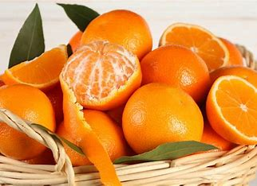

The orange, also called sweet orange to distinguish it from the bitter orange (Citrus × aurantium), is the fruit of a tree in the family Rutaceae. Botanically, this is the hybrid Citrus × sinensis, between the pomelo (Citrus maxima) and the mandarin orange (Citrus reticulata). The chloroplast genome, and therefore the maternal line, is that of pomelo. There are many related hybrids including of mandarins and sweet orange. The sweet orange has had its full genome sequenced. The orange originated in a region encompassing Southern China, Northeast India, and Myanmar; the earliest mention of the sweet orange was in Chinese literature in 314 BC. Orange trees are widely grown in tropical and subtropical areas for their sweet fruit. The fruit of the orange tree can be eaten fresh or processed for its juice or fragrant peel. In 2022, 76 million tonnes of oranges were grown worldwide, with Brazil producing 22% of the total, followed by India and China. Oranges, variously understood, have featured in human culture since ancient times. They first appear in Western art in the Arnolfini Portrait by Jan van Eyck, but they had been depicted in Chinese art centuries earlier, as in Zhao Lingrang's Song dynasty fan painting Yellow Oranges and Green Tangerines. By the 17th century, an orangery had become an item of prestige in Europe, as seen at the Versailles Orangerie. More recently, artists such as Vincent van Gogh, John Sloan, and Henri Matisse included oranges in their paintings.
The orange tree is a relatively small evergreen, flowering tree, with an average height of 9 to 10 m (30 to 33 ft), although some very old specimens can reach 15 m (49 ft). Its oval leaves, which are alternately arranged, are 4 to 10 cm (1.6 to 3.9 in) long and have crenulate margins. Sweet oranges grow in a range of different sizes, and shapes varying from spherical to oblong. Inside and attached to the rind is a porous white tissue, the white, bitter mesocarp or albedo (pith). The orange contains a number of distinct carpels (segments or pigs, botanically the fruits) inside, typically about ten, each delimited by a membrane and containing many juice-filled vesicles and usually a few pips. When unripe, the fruit is green. The grainy irregular rind of the ripe fruit can range from bright orange to yellow-orange, but frequently retains green patches or, under warm climate conditions, remains entirely green. Like all other citrus fruits, the sweet orange is non-climacteric, not ripening off the tree. The Citrus sinensis group is subdivided into four classes with distinct characteristics: common oranges, blood or pigmented oranges, navel oranges, and acidless oranges. The fruit is a hesperidium, a modified berry; it is covered by a rind formed by a rugged thickening of the ovary wall.
Citrus trees are angiosperms, and most species are almost entirely interfertile. This includes grapefruits, lemons, limes, oranges, and many citrus hybrids. As the interfertility of oranges and other citrus has produced numerous hybrids and cultivars, and bud mutations have also been selected, citrus taxonomy has proven difficult. The sweet orange, Citrus x sinensis, is not a wild fruit, but arose in domestication in East Asia. It originated in a region encompassing Southern China, Northeast India, and Myanmar. The fruit was created as a cross between a non-pure mandarin orange and a hybrid pomelo that had a substantial mandarin component. Since its chloroplast DNA is that of pomelo, it was likely the hybrid pomelo, perhaps a pomelo BC1 backcross, that was the maternal parent of the first orange. Based on genomic analysis, the relative proportions of the ancestral species in the sweet orange are approximately 42% pomelo and 58% mandarin. All varieties of the sweet orange descend from this prototype cross, differing only by mutations selected for during agricultural propagation. Sweet oranges have a distinct origin from the bitter orange, which arose independently, perhaps in the wild, from a cross between pure mandarin and pomelo parents. Sweet oranges have in turn given rise to many further hybrids including the grapefruit, which arose from a sweet orange x pomelo backcross. Spontaneous and engineered backcrosses between the sweet orange and mandarin oranges or tangerines have produced the clementine and murcott. The ambersweet is a complex sweet orange x (Orlando tangelo x clementine) hybrid. The citranges are a group of sweet orange x trifoliate orange (Citrus trifoliata) hybrids
In Europe, the Moors introduced citrus fruits including the bitter orange, lemon, and lime to Al-Andalus in the Iberian Peninsula during the Arab Agricultural Revolution. Large-scale cultivation started in the 10th century, as evidenced by complex irrigation techniques specifically adapted to support orange orchards. Citrus fruits—among them the bitter orange—were introduced to Sicily in the 9th century during the period of the Emirate of Sicily, but the sweet orange was unknown there until the late 15th century or the beginnings of the 16th century, when Italian and Portuguese merchants brought orange trees into the Mediterranean area.
Shortly afterward, the sweet orange quickly was adopted as an edible fruit. It was considered a luxury food grown by wealthy people in private conservatories, called orangeries. By 1646, the sweet orange was well known throughout Europe; it went on to become the most often cultivated of all fruit trees. Louis XIV of France had a great love of orange trees and built the grandest of all royal Orangeries at the Palace of Versailles. At Versailles, potted orange trees in solid silver tubs were placed throughout the rooms of the palace, while the Orangerie allowed year-round cultivation of the fruit to supply the court. When Louis condemned his finance minister, Nicolas Fouquet, in 1664, part of the treasures that he confiscated were over 1,000 orange trees from Fouquet's estate at Vaux-le-Vicomte.
Spanish travelers introduced the sweet orange to the American continent. On his second voyage in 1493, Christopher Columbus may have planted the fruit on Hispaniola. Subsequent expeditions in the mid-1500s brought sweet oranges to South America and Mexico, and to Florida in 1565, when Pedro Menéndez de Avilés founded St Augustine. Spanish missionaries brought orange trees to Arizona between 1707 and 1710, while the Franciscans did the same in San Diego, California, in 1769. Archibald Menzies, the botanist on the Vancouver Expedition, collected orange seeds in South Africa, raised the seedlings on board, and gave them to several Hawaiian chiefs in 1792. The sweet orange came to be grown across the Hawaiian Islands, but its cultivation stopped after the arrival of the Mediterranean fruit fly in the early 1900s. Florida farmers obtained seeds from New Orleans around 1872, after which orange groves were established by grafting the sweet orange on to sour orange rootstocks.
The word "orange" derives ultimately from Proto-Dravidian or Tamil நாரம் (nāram). From there the word entered Sanskrit नारङ्ग (nāraṅga), meaning 'orange tree'. The Sanskrit word reached European languages through Persian نارنگ (nārang) and its Arabic derivative نارنج (nāranj). The word entered Late Middle English in the 14th century via Old French pomme d'orenge. Other forms include Old Provençal auranja, Italian arancia, formerly narancia. In several languages, the initial n present in earlier forms of the word dropped off because it may have been mistaken as part of an indefinite article ending in an n sound. In French, for example, une norenge may have been heard as une orenge. This linguistic change is called juncture loss. The color was named after the fruit, with the first recorded use of orange as a color name in English in 1512.